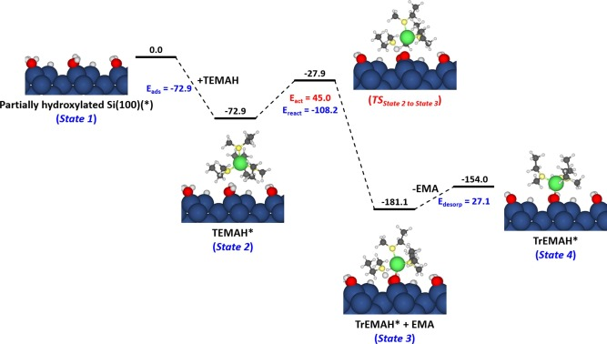
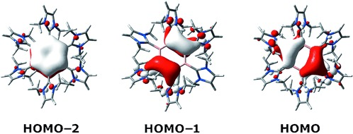
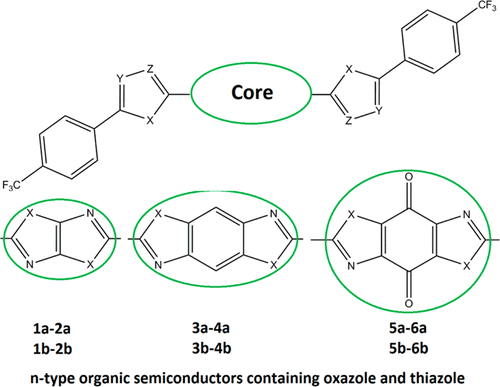
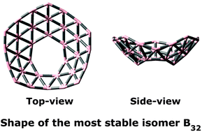

Data Driven Materials Modelling
Data-driven materials modeling leverages the increasing availability of experimental and computational data to establish quantitative relationships between material structure, composition, processing conditions, and properties. Through techniques such as machine learning, compressed sensing, and statistical learning, complex materials behavior can be analyzed and predicted with significantly reduced computational cost. This paradigm complements traditional theory- and simulation-driven approaches, enabling rapid screening of candidate materials, uncovering hidden physical insights, and accelerating materials design and discovery.

Reaction Mechanism of ALD Process
1. Growth mechanism of HfO2 film on H-terminated Si (100) surface from atomic layer deposition process using tetrakis(ethylmethylamino)hafnium. Surfaces and Interfaces. DOI: 10.1016/j.surfin.2024.105024
2. Chemisorption and Surface Reaction of Hafnium Precursors on the Hydroxylated Si(100) Surface. Coatings. DOI: 10.3390/coatings13122094
3. Investigation of tetrakis(ethylmethylamido)hafnium adsorption mechanism in initial growth of atomic layer deposited-HfO2 thin films on H-/OH-terminated Si (100) surfaces. Journal of Vacuum Science & Technology B. DOI: 10.1116/6.0002920
4. A theoretical study of the atomic layer deposition of HfO2 on Si(1 0 0) surfaces using tetrakis(ethylmethylamino) hafnium and water. Applied Surface Science. DOI: 10.1016/j.apsusc.2022.155702
5. Atomic Layer Deposition of Al2O3 Using Aluminum Triisopropoxide (ATIP): A Combined Experimental and Theoretical Study. The Journal of Physical Chemistry C. DOI: 10.1021/acs.jpcc.8b09198

Disk aromaticity
1. Disk Aromaticity of the Planar and Fluxional Anionic Boron Clusters B20−/2−. Chemistry - A European Journal. DOI: 10.1002/chem.201104064
2. Boron-Boron Multiple Bond in [B(NHC)]2: Towards Stable and Aromatic [B(NHC)]n Rings. Angewandte Chemie International Edition. DOI: 10.1002/anie.201300126
3. Design of aromatic heteropolycyclics containing borole frameworks. Chemical Communications. DOI: 10.1039/c3cc47573e
4. Particle on a Boron Disk: Ring Currents and Disk Aromaticity in B202–. Inorganic Chemistry. DOI: 10.1021/ic401596s

Organic semiconduting materials
1. A theoretical study on charge transport of dithiolene nickel complexes. Physical Chemistry Chemical Physics. DOI: 10.1039/c5cp07277h
2. Spin-polarized transport properties in some transition metal dithiolene complexes. Physical Chemistry Chemical Physics. DOI: 10.1039/c7cp05962k
3. Design of novel tetra-hetero[8]circulenes: a theoretical study of electronic structure and charge transport characteristics. RSC Advances. DOI: 10.1039/c4ra16485g
4. Theoretical Design of n-Type Organic Semiconducting Materials Containing Thiazole and Oxazole Frameworks. The Journal of Physical Chemistry A. DOI: 10.1021/jp500899k
5. Theoretical Design of π-Conjugated Heteropolycyclic Compounds Containing a Tricoordinated Boron Center. The Journal of Physical Chemistry C. DOI: 10.1021/jp4049154
6. The π-Conjugated Molecules Containing Naphtho[2,3-b]thiophene and Their Derivatives: Theoretical Design for Organic Semiconductors. The Journal of Physical Chemistry C. DOI: 10.1021/jp401191a

Atomic clusters: electronic structure and properties
1. Electronic structure of coinage metal clusters M20 (M = Cu, Ag, Au) from density functional calculations and the phenomenological shell model. Chemical Physics Letters. DOI: 10.1016/j.cplett.2018.05.077
2. A new chiral boron cluster B44 containing nonagonal holes. Chemical Communications. DOI: 10.1039/c5cc09111j
3. Aromatic cages B0/+42: unprecedented existence of octagonal holes in boron clusters. Physical Chemistry Chemical Physics. DOI: 10.1039/c5cp07342a
4. The B32 cluster has the most stable bowl structure with a remarkable heptagonal hole. Chemical Communications. DOI: 10.1039/c5cc01252j
5. A disk-aromatic bowl cluster B30: toward formation of boron buckyballs. Chem. Commun. DOI: 10.1039/c3cc48392d
6. A Stochastic Search for the Structures of Small Germanium Clusters and Their Anions: Enhanced Stability by Spherical Aromaticity of the Ge10 and Ge122− Systems. Journal of Chemical Theory and Computation. DOI: 10.1021/ct1006482
